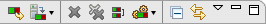
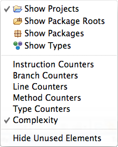

Using the Coverage View
The Coverage view automatically appears when a new coverage session is added or can manually opened from the Window → Show View menu in the Java category. It shows coverage summaries for the active session.

The Coverage view shows all analyzed Java elements within the common Java hierarchy. Individual columns contain the following numbers for the active session, always summarizing the child elements of the respective Java element:
- Coverage ratio
- Items covered
- Items not covered
- Total items
The elements may be sorted in ascending or descending order by clicking the respective column header. Double-clicking an element opens its declaration in an editor with highlighted source code. You can select between different metrics, see last section for details.
Toolbar and Drop-Down Menu

The coverage view's toolbar offers the following actions:
- Coverage Last Launched: Re-run the currently selected coverage session.
- Dump Execution Data: Dump execution data from a running process and create a new session from the data. Only active when at least one process is running in Coverage mode.
- Remove Active Session: Remove the currently selected coverage session.
- Remove All Sessions: Remove all coverage sessions.
- Merge Sessions: Merges multiple sessions into a single one.
- Select Session: Select session from the drop down-menu and make it the active session.
- Collapse All: Collapse all expanded tree nodes.
- Link with Current Selection: If this toggle is checked the coverage view automatically reveals the Java element currently selected in other views or editors.
Some of the actions are deactivated if there is no session or only a single session. More settings are available form the coverage view's drop-down menu:

- Show Elements: Select Java elements shown as root entries in the coverage tree: Projects, package fragment roots (source folders or libraries), package fragments or types.
- Counter Mode: Different counter modes can be selected from the view's drop-down menu: bytecode instructions, branches, lines, methods, types and cyclomatic complexity. Please see JaCoCo documentation for detailed counter definitions.
- Hide Unused Elements: Filter all elements from the coverage view that have not been executed at all during the coverage session.
Filtering
If you're working on a particular unit you can filter out all classes which have not been loaded during the test run. This filtering can be enabled with the Hide Unused Types menu entry in the Coverage view's drop-down menu.
Tip: Combine the Hide Unused Types option with types as root entries. This will give you a plain list of all classes loaded for your test case.